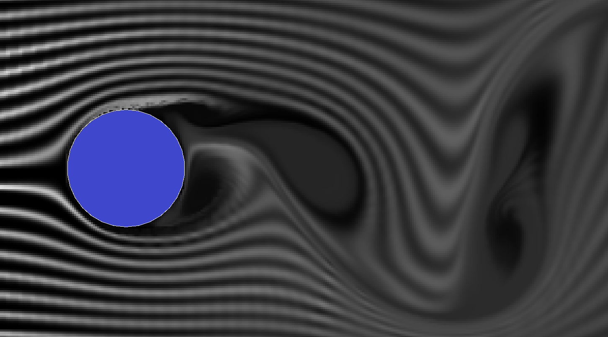

How I Created a Cross-Platform Multithreaded Eulerian Fluid Simulator Using Pure C++
Available on GitHubIntroduction
As an Aerospace Engineering student, I’ve built a solid foundation in fluid mechanics and vector calculus through several courses. Now I’m applying the principles I've learned to build an Eulerian fluid simulator. The governing equations of fluid flow, known as the Navier-Stokes equations, provide a detailed description of the motion of fluid substances.
These equations account for the conservation of momentum, mass, and energy in a fluid, which is the basis for modern computational fluid dynamics (CFD) analysis. This simulator is a direct implementation of those principles, allowing me to explore interactively how fluids behave under different conditions, and gain a better intuition for the equations themselves.
Demo
The current version of my fluid simulator is a 2D simulation that runs in real-time on any modern computer. The simulation is interactive, allowing the user to drag objects around, and change the visualization mode between:- Dye field
- Pressure field
- Velocity direction
- Vorticity field
Math
Without too deep into the math, I'd like to give you an idea of the Navier-Stokes equations:
\[ \frac{\partial \mathbf{u}}{\partial t} + (\mathbf{u} \cdot \nabla) \mathbf{u} = -\frac{1}{\rho} \nabla p + \nu \nabla^2 \mathbf{u} + \mathbf{f} \] \[ \nabla \cdot \mathbf{u} = 0 \]
Looks scary - and is scary. Solving these equations in general has not been done yet, and solving them in a discrete case is still very hard, so we will make some assumptions:
- Inviscid Flow: The Euler equations assume that the fluid has no viscosity. This means that internal friction between fluid layers (which arises from viscosity) is neglected. As a result, the Euler equations do not account for shear stresses within the fluid.
- No Heat Conduction: The Euler equations also assume there is no heat conduction within the fluid, i.e. no energy transfer due to temperature gradients.
Putting it all together, we arrive at the Euler equations:
\[ \frac{\partial \mathbf{u}}{\partial t} + (\mathbf{u} \cdot \nabla) \mathbf{u} = -\frac{1}{\rho} \nabla p + \mathbf{f} \] \[ \nabla \cdot \mathbf{u} = 0 \]
Implementation
While the Euler equations are nice to look at, they don’t exactly help us compute the solution, so to do that we will discretize them into a simulation loop following this strategy:
- Add or modify boundary conditions, i.e. dragging the model, setting inlet velocity, adding dye to see streamlines, etc.
- Solve the incompressibility condition (constant density everywhere) using 50-200 iterations of the Gauss-Seidel method over the entire simulation grid. This step takes around 90% of the compute time, and hence much time was spent optimizing it.
- Solve boundary conditions at edges of the simulation and for the body in the flow.
- Advect velocity from each cell to the next in the appropriate directions.
- Advect dye (visualization).
- Render results, handle user interface, etc.
Optimizations
Fluid simulations are computationally expensive, and optimization was always a goal for this project. Currently, the following techniques are implemented:
- Writing everything in C++ and compiling with maximum auto-optimization offers good baseline performance.
- OpenMP is used for multicore processing of all simulation aspects, greatly accelerating solve time. Benchmarks showed that the difference between OpenMP on/off on my 12-core Ryzen 3.8GHz system was on the order of ~10x performance gain (451ms solve time to 44.5ms solve time).
- Using a slight variation on the traditional method, the Gauss-Seidel Red-Black approach to solving the incompressibility condition allows for parallelizing an otherwise purely sequential problem, which contributed to the 10x performance gain quoted above.
- Rendering functions operate on raw pixel and data arrays as much as possible, and only use expensive draw and display buffer operations at the very end of rendering where it's necessary. This improved frame render time from 25ms to 0.36ms (70x improvement) compared to the original function.
Analysis of Results
The simulation produces a number of correct phenomena, such as:
-
Pressure Distribution on an Angled Airfoil: As expected in fluid dynamics, the pressure on the top surface of the airfoil is lower (blue), and the pressure on the bottom surface is higher (orange), generating lift. You can read more about airfoil pressure distribution on the Wikipedia page.

-
Vortex Shedding: The simulation shows clear vortex shedding behind obstacles in the flow, a phenomenon where alternating vortices are shed from either side of an object, such as a cylinder cross-section, as seen below. You can read more about vortex shedding on the Wikipedia page.
 -
Flow Stability: Despite the sharp changes in flow direction (velocity gradient) and the presence of obstacles, the simulation remains stable under the test conditions, indicating a well-functioning solver. Stability is maintained even in regions with high velocity gradients due to boundaries, as seen below.